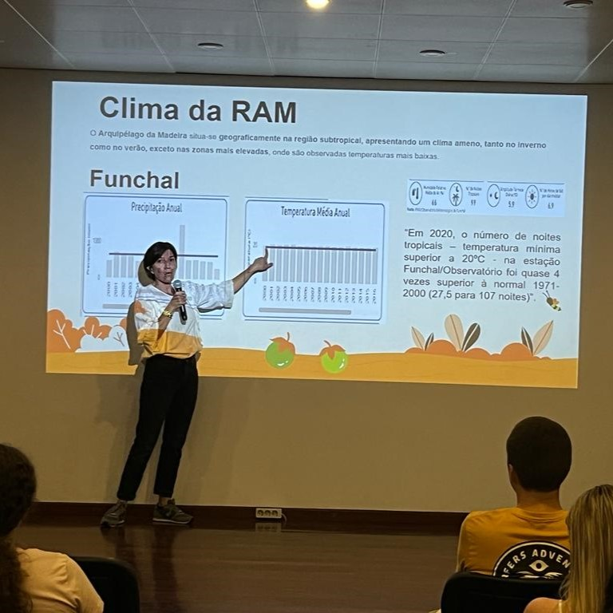
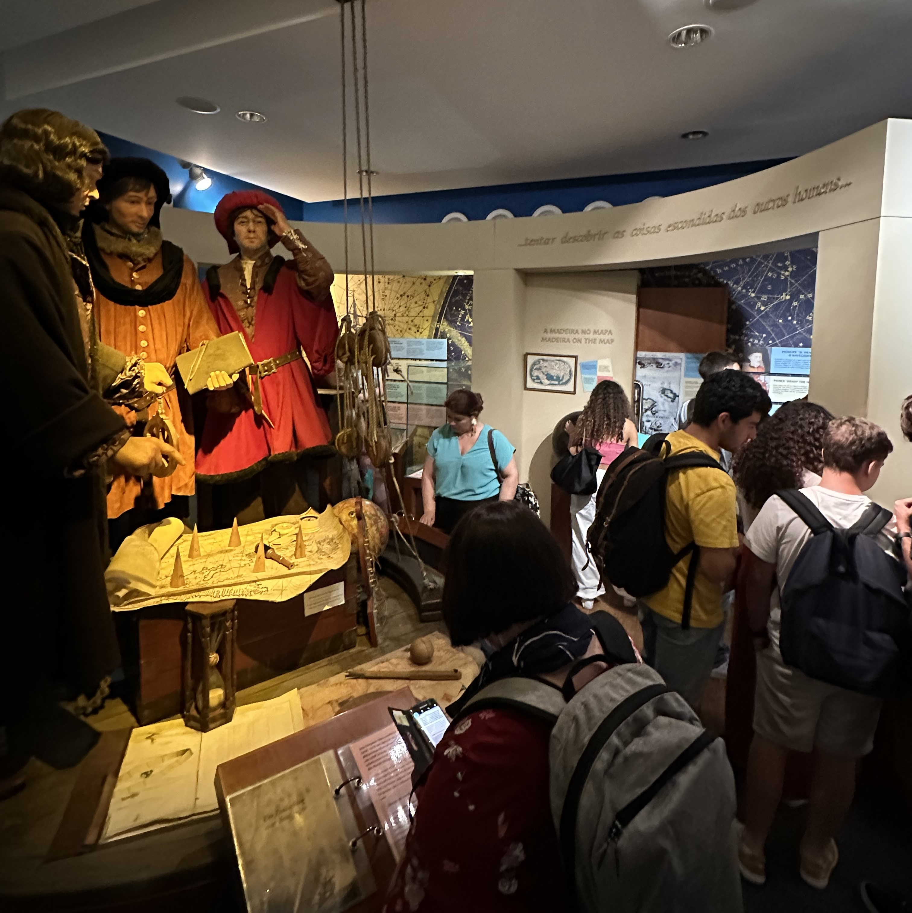
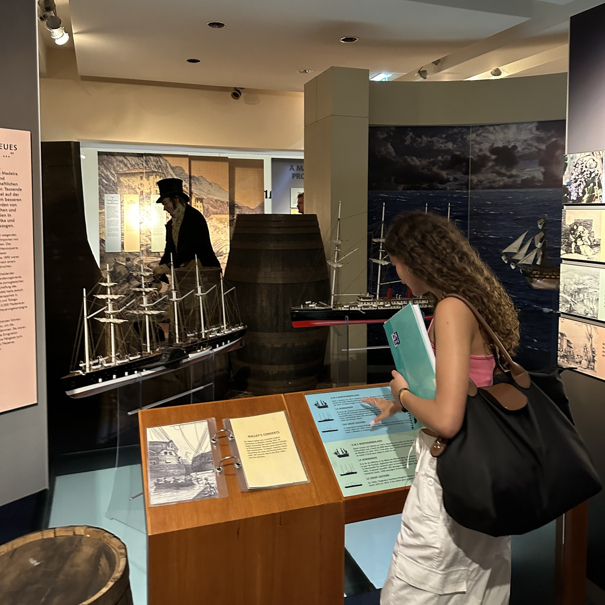
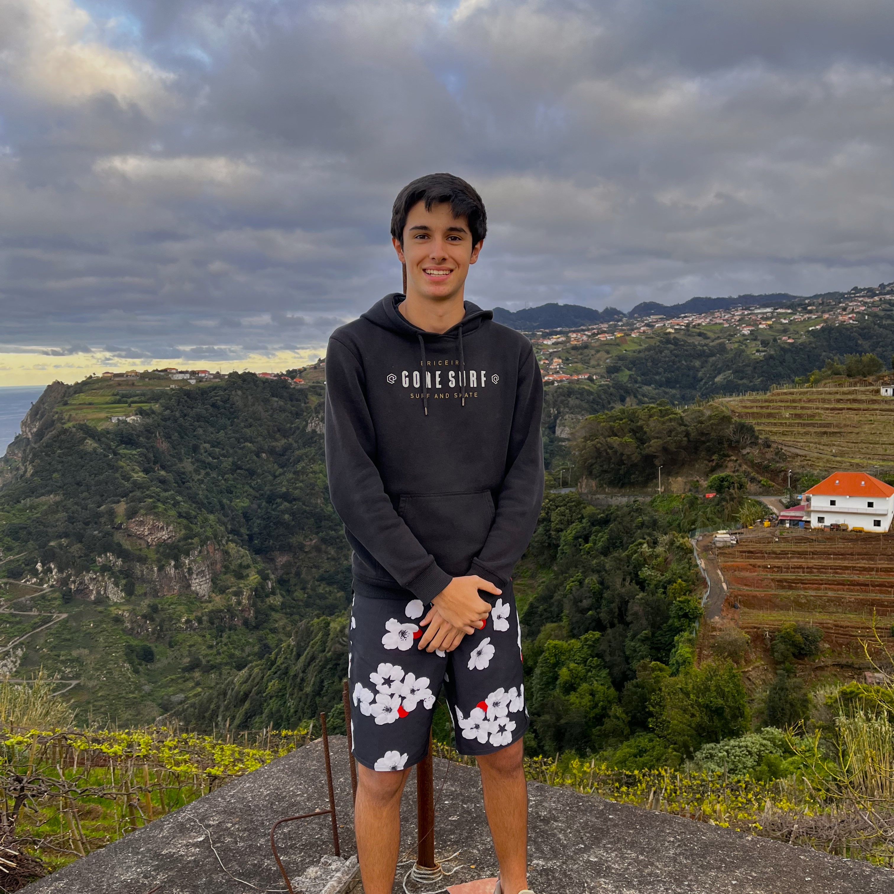

"A Agricultura Biológica ea Segurança Alimentar na RAM"
Palestra guiada pela Engenheira Márcia Melim, da Secretaria Regional da Agricultura e Desenvolvimento Rural na Escola Secundária Francisco Franco.Esta palestra teve como objetivo dar conhecimento aos alunos presentes acerca de temas como a atividade agrícola, sustentabilidade e soberania alimentar.

Como melhorar a agricultura biológica e a segurança alimentar na região?
Levar mais jovens para a área da agricultura;Mobilização, conservação e fertilização dos solos;Criação de agroflorestas;Produção animal holística;Quebrar o envelhecimento da população do norte;Maior biodiveridade;Controlar a pressão demográfica elevada que leva à deslocação da agricultura para montante e para as zonas rurais.
"Energia Nuclear na era das alterações climáticas"
Palestra guiada pelo presidente do Instituto de Plasmas e Fusão Nuclear, Bruno Soares, sediado no Instituto Superior Técnico, agora presente na Escola Secundária Francisco Franco.Os alunos puderam, desta forma, ganhar um maior conhecimento sobre o conceito de energia nuclear e sua aplicação em tempos marcados pelas mudanças climáticas.
Porque é importante o uso da energia nuclear e qual o seu impacto no planeta?
Os alunos puderam compreender:Como é gerada a eletricidade em Portugal, ficando a par do funcionamento de uma central elétrica;O papel da fusão nuclear na contribuição para o nosso planeta, pois esta não traz tantos malefícios ambientais como é costume pensar;Alternativas sustentávéis de forma a inovar a produção de energia a nível nacional e internacional, visando diminuir as emissões de carbono para a atmosfera.

Visita ao museu Madeira Story Centre
Visita de estudo realizada pela turma 12º7 da Escola Secundária Francisco Franco, acompanhada pela professora Carol Susana Gomes Aguiar, no âmbito da disciplina de Aplicações Informáticas B.Os alunos tiveram a oportunidade de conhecer melhor a história antiga da sua ilha.

Quais as origens da ilha da Madeira?
Este museu, através dos seus conteúdos detalhados expostos, interativos ou não, proporcionaram aos visitantes informações acerca da história e cultura da Madeira, desde as suas origens vulcânicas à sua descoberta, ataques de piratas, produtos madeirenses mais conhecidos e exportados, hidroaviões, e até a sua relação com a história de outros países.
AGORA É
A TUA VEZ
DE AGIR!
A NOSSA EQUIPA
Fundadores da MNR
Margarida Nóbrega

Martim Rosa
Organização sem fins lucrativos que tem o intuito de promover ações que rumem para um futuro verde e sustentável.
Somos dois alunos do 12ºano da Escola Secundária Francisco Franco, localizada na Rua João de Deus nº9, Funchal, Madeira, Portugal, e pertencemos ao curso de Ciências e Tecnologias.
Este site foi feito na sequência de um projeto de Cidadania e Desenvolvimento, na disciplina de Aplicações Informáticas B, realizado ao longo do 3ºperíodo, cujo tema é Educação Ambiental e Desenvolvimento Sustentável.
O objetivo deste site é sensibilizar e informar as pessoas para o tema da sustentabilidade, fazendo com que estas fiquem informadas e tomem ações que beneficiem a saúde do nosso planeta, pois só temos este e temos de tomar bem conta dele.
Contacte-nos
Estaremos sempre à sua disposição!
Implementação de Energias Renováveis
O futuro é verde
A implementação de energias renováveis é uma das principais estratégias para promover a transição para um sistema energético mais sustentável e reduzir a dependência dos combustíveis fósseis. As energias renováveis são fontes de energia limpas, abundantes e praticamente inesgotáveis, como a energia solar, eólica, hídrica, biomassa e geotérmica. Elas oferecem uma alternativa viável e promissora para enfrentar os desafios ambientais e climáticos que enfrentamos atualmente. Uma das principais vantagens das energias renováveis é a sua capacidade de reduzir significativamente as emissões de gases de efeito estufa. Enquanto as fontes de energia convencionais, como o carvão e o petróleo, liberam grandes quantidades de dióxido de carbono e outros poluentes atmosféricos, as energias renováveis não produzem emissões líquidas de carbono durante sua operação. Isso ajuda a mitigar as mudanças climáticas e a preservar a qualidade do ar, contribuindo para a saúde pública e para a sustentabilidade do planeta. Além disso, as energias renováveis são recursos praticamente inesgotáveis. Enquanto os combustíveis fósseis são finitos e estão sujeitos a esgotamento, as fontes renováveis são naturalmente recorrentes e podem ser aproveitadas de forma contínua. O sol, por exemplo, é uma fonte de energia abundante e acessível em grande parte do planeta. Ao investir em tecnologias de captação de energia solar, como painéis solares, é possível gerar eletricidade de maneira limpa e sustentável.
Conservação da Biodiversidade
Um presente para as gerações futuras
A biodiversidade refere-se à variedade de vida existente na Terra, incluindo plantas, animais, fungos e microorganismos, bem como os ecossistemas dos quais fazem parte. Essa diversidade biológica desempenha um papel fundamental na sustentabilidade do planeta e no bem-estar do ser humano. No entanto, a biodiversidade enfrenta muitos desafios e ameaças em todo o mundo. A perda de habitat, a degradação ambiental, a poluição, as mudanças climáticas e a exploração não sustentável dos recursos naturais são apenas alguns dos fatores que contribuem para a diminuição da biodiversidade em escala global. A conservação da biodiversidade procura proteger e preservar a variedade de espécies e ecossistemas existentes. Neste sentido, existem várias estratégias e medidas que podem ser adotadas. Em primeiro lugar, é essencial estabelecer áreas protegidas, como parques nacionais, reservas naturais e santuários de vida selvagem. Esses espaços desempenham um papel crucial na preservação de habitats naturais e no fornecimento de refúgio para espécies ameaçadas. Além disso, a recuperação de ecossistemas degradados, como florestas, pântanos e recifes de coral é essencial. Isso pode envolver práticas como a reflorestação, a remoção de espécies invasoras e a reintrodução de espécies nativas. É de realçar, também, a importância do combate à caça e pesca predatórias, com a implementação de leis rigorosas.
Prática de uma Agricultura Sustentável
Da terra à mesa
A agricultura sustentável visa satisfazer as necessidades atuais de produção de alimentos, fibras e biocombustíveis, ao mesmo tempo que preserva os recursos naturais e protege o meio ambiente. Esta prática reconhece a interdependência entre os sistemas agrícolas, os ecossistemas e a sociedade, buscando equilibrar a produtividade agrícola com a conservação da biodiversidade e a sustentabilidade ambiental. A agricultura sustentável promove a diversificação de culturas e a integração de sistemas agrícolas. A monocultura intensiva, com a produção em grande escala de um único tipo de cultura, pode levar à degradação do solo, aumento da suscetibilidade a pragas e doenças e perda de biodiversidade. Por outro lado, a diversificação de culturas ajuda a manter a saúde do solo, promove a rotação de nutrientes e reduz a dependência de agroquímicos. A integração de sistemas agrícolas, como a agrofloresta, que combina árvores, culturas agrícolas e criação de animais, pode aumentar a resiliência do ecossistema, fornecer serviços ambientais e melhorar a produtividade. A agricultura sustentável também envolve o uso adequado da água, que é um recurso essencial para a produção agrícola. Isso inclui o uso eficiente da irrigação, a conservação da água por meio de técnicas como a captação de água da chuva e o reúso de água, e a proteção dos ecossistemas aquáticos, como rios e lagos, evitando a poluição e o esgotamento excessivo. Além dos aspetos ambientais, a agricultura sustentável também considera os aspetos sociais e económicos. Incluindo a promoção da justiça social no campo, garantindo condições de trabalho dignas, a valorização da agricultura familiar e o incentivo à participação das comunidades locais. Também busca a viabilidade económica dos agricultores, promovendo o acesso a mercados justos e a adoção de práticas de gestão financeira sustentável.
Gestão Responsável dos Recursos Naturais
Protege o presente, conserva o futuro
A gestão responsável dos recursos naturais envolve a adoção de práticas e políticas que tenham em consideração a sua finitude e a importância de preservá-los para garantir um ambiente saudável e equilibrado. Os recursos naturais incluem elementos como a água, o solo, as florestas, os minerais e os combustíveis fósseis. Eles são essenciais para o funcionamento dos ecossistemas, para a produção de alimentos, para a geração de energia e para o desenvolvimento econômico. No entanto, a exploração desenfreada e irresponsável desses recursos pode levar à sua degradação e esgotamento, além de causar impactos negativos ao meio ambiente e à sociedade. Um dos princípios fundamentais da gestão responsável dos recursos naturais é a conservação. Isso implica em proteger áreas naturais, como reservas florestais, parques nacionais e áreas de preservação ambiental, além de promover a recuperação de ecossistemas degradados. A conservação não apenas garante a sobrevivência de espécies e habitats, mas também contribui para a regulação do clima, a purificação da água e a polinização. Além da conservação, a gestão responsável dos recursos naturais procura promover a utilização eficiente desses recursos. Isso envolve práticas como a agricultura sustentável, o uso racional da água, a reciclagem e a reutilização de materiais, a busca por energias renováveis e a implementação de tecnologias limpas. A eficiência no uso dos recursos não apenas reduz o impacto ambiental, mas também traz benefícios econômicos, como a redução de custos e o aumento da produtividade. Outro aspecto importante é a consideração dos aspectos sociais e culturais. Isso significa envolver as comunidades locais nas decisões que afetam os recursos naturais nas suas regiões, respeitar os conhecimentos tradicionais e as práticas sustentáveis, promover a equidade no acesso aos recursos e garantir que os benefícios da sua exploração sejam distribuídos de forma justa.
Conservação dos Oceanos
Garante um amanhã azul
A conservação dos oceanos tem uma importância crucial para a saúde do nosso planeta e para a sobrevivência das espécies marinhas e da humanidade como um todo. Os oceanos cobrem mais de 70% da superfície da Terra e desempenham um papel fundamental na regulação do clima, na produção de oxigênio, na captura de carbono e no fornecimento de alimentos e recursos naturais. No entanto, estes enfrentam sérios desafios devido a atividades humanas irresponsáveis como a poluição (que leva à acidificação dos oceanos e mudanças climáticas), a pesca excessiva e a destruição de habitats costeiros. Estabelecer áreas marinhas protegidas é essencial para preservar ecossistemas marinhos frágeis e habitats importantes. Essas áreas podem incluir recifes de coral, manguezais, estuários e zonas de reprodução de espécies marinhas. A proteção dessas áreas ajuda a preservar a biodiversidade, a restaurar ecossistemas degradados e a manter a resiliência dos oceanos. Para combater a poluição marinha, é necessário adotar políticas e práticas que reduzam a poluição, promovam a reciclagem, incentivem a limpeza de praias e implementem sistemas eficientes de tratamento de águas residuais. Além disso, a implementação de medidas de gestão pesqueira sustentável, como quotas de pesca, controle de capturas e proteção de áreas de desova, é essencial para garantir a saúde dos estoques pesqueiros e a preservação dos ecossistemas marinhos. É também importante implementar medidas de conservação que protejam e restaurem habitats marinhos em risco, evitando a destruição causada pela urbanização descontrolada e pela conversão de áreas naturais.
Implementação de uma Economia Circular
Do desperdício à inovação
A implementação de uma economia circular lida com os desafios da produção e do consumo excessivo, bem como com o desperdício e a degradação ambiental. Ao contrário do modelo linear tradicional de "extrair, produzir, usar e descartar", a economia circular foca-se em fechar o ciclo de recursos, minimizando a extração de matérias-primas, reduzindo o desperdício e promovendo a reutilização, a reciclagem e a regeneração dos materiais. Em vez de descartar produtos no final da sua vida útil, a economia circular procura reintroduzi-los no sistema económico, fechando os ciclos de materiais e minimizando o impacto ambiental. Graças à reutilização e manutenção destes produtos, é possível reduzir a demanda por novos materiais, mitigando os impactos ambientais associados à extração e à produção. Caso contrário, estes produtos poderiam ser acumulados em aterros sanitários ou dispersos no meio ambiente. A economia circular promove a transição para uma economia mais sustentável e resiliente, com a geração de empregos verdes e a promoção da competitividade e do crescimento econômico. Para a sua implementação, é necessário o envolvimento de diversas entidades, incluindo governos, empresas, sociedade civil e consumidores. É importante adotar políticas e regulamentações favoráveis, como incentivos fiscais para a reciclagem e a reutilização, normas de eco-design, padrões de produção sustentável e sistemas eficientes de gestão de resíduos.